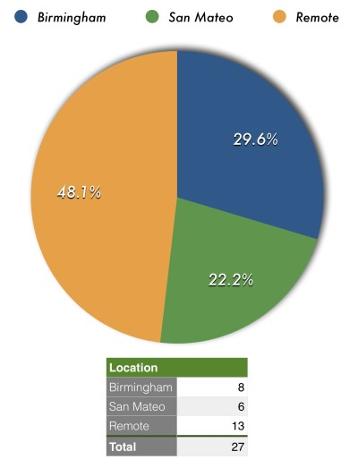

The Great Remote Work Week - How We Did It
“Hey, everyone, we’re all going home next week” – With this announcement from Compose CEO Kurt, so began an intriguing and insight filled week at the company. Remote working can be effective, but where you have a mix of remote workers and office based people it can be difficult for latter to understand the challenges that come from working remotely, let alone nomadically.
I live in the middle of the country and was hired as a remote employee, so this wasn’t a big change for me. Over the last 3 months, I’ve worked out of our San Mateo and Birmingham office – remote employees are encouraged to meet up in our offices and work together. That “come into the office” time is the inverse of remote work week, allowing remote workers to understand the office dynamics. It is great to set up shop and work with team mates, not just those who are usually in the office but also those who travel out to meet up. Most folks know or have lived the office experience, but the opposite is rarely true.
That means that, if we look at the numbers, just over half the employees don’t know what it’s like to work remotely. They may well use all the tools that the remote folk use, but the experience is different…
Those 48% of remote employees are spread across five states, four countries and three continents, which is interesting in itself but an article for another time.
Sharing is caring and the first thing to share with the soon to be de-office employees was how to cope. We put one of our favorite remote working tools – Hackpad
Everyone took to Sqwiggle over the week and it helped recreate some of the office interaction feel for remote working and it proved its worth over the week. But video conferencing brings us to another subject.
{kind=link}
Being online
Bandwidth. Internet bandwidth is a resource more precious than a comfy chair and more valuable than a sound proofed room. If you don’t have reliable internet bandwidth then you will find yourself unable to effectively remote work. In an age of Wi-Fi everywhere (except that coffee-shop that makes it a feature not to have Wi-Fi) you would think it would be simple for the nomad to find a wireless home.
A Mifi or a data plan that lets you tether your laptop to your phone is useful to have in a bind, but you’ll still need to find that stable, solid internet connection somewhere that you can call a temporary home. And talking about home, even the stay at home workers will experience this problem – remote working tools can put unexpected strains on domestic internet connections. The rule of thumb is, before you settle in with your latte, test and verify your connection.
Get Comfortable
Once you’ve got your stable connection and you are chatting to the rest of the company, you need to get comfortable. Ergonomics is important to the nomad and the home-alone worker. Make sure wherever you are working isn’t putting too much strain on your back, make sure surfaces can be aligned for comfort and be aware of any early aches. Also, ensure that, as you should in the office, you are getting up to stretch your legs.
And it’s not just your physical environment you should look out for. TV and music in the background can help some people, but they can also prove to be a distraction which will keep you out of the zone. SpotifyThere’s no one size fits all for remote working, but you can ensure that everyone understands what it involves. The great remote work week doesn’t just build empathy for remote working though – it also makes sure that everyone has a personal backup plan for their working space, it gets people using your remote working tools better and it is a bonding experience for all. We recommend it for any company that is serious about remote working.
{kind=link}